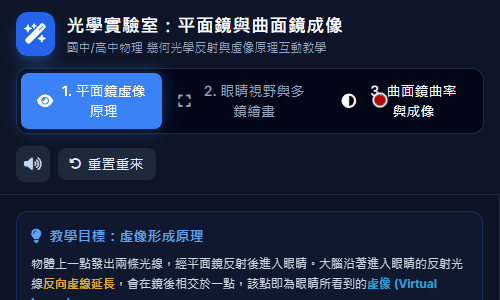
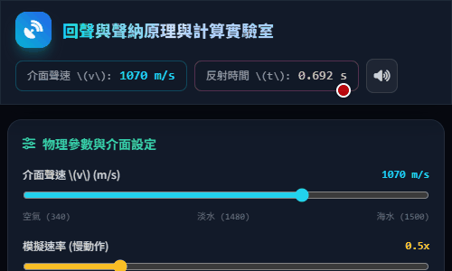

📘 基礎力學

💡 光學

透鏡 3D 成像實驗
探索幾何光學與薄透鏡成像原理，拖曳滑桿觀察物距與像距變化。
開啟動畫 ↗3D波動光學實驗室
模擬雙狹縫干涉與單狹縫繞射，可調整光波參數與視角。
開啟動畫 ↗
針孔成像3D實驗
探索幾何光學與成像原理，調整物距與像距。
開啟動畫 ↗
折射定律與雷射打靶
探索斯涅爾定律與視覺虛像，體驗水中看魚打靶遊戲。
開啟動畫 ↗
幾何光學透鏡成像模擬
探索單透鏡與複數透鏡的成像原理，拖曳物件觀察光線折射與二次成像。
開啟動畫 ↗
光與顏色物理實驗室
探索斜向反射、折射與色光混合的互動模擬實驗。
開啟動畫 ↗
光速測量歷史與原理
互動探索伽利略燈籠法與羅默觀測木衛一食的物理原理。
開啟動畫 ↗
平面與曲面鏡成像
探索幾何光學反射與虛像原理，動態體驗平面鏡與曲面鏡成像。
開啟動畫 ↗
互動光學實驗室
探索幾何光學與雷射光路，拖曳元件與調整參數進行互動。
開啟動畫 ↗
幾何光學與三稜鏡闖關實驗室
探索光學折射與反射，調整三稜鏡挑戰打靶闖關！
開啟動畫 ↗
光學物理演示系統
探索幾何光學折射、反射與斯奈爾定律的互動物理模擬。
開啟動畫 ↗🌊 波動與聲學

二維都卜勒效應模擬
探索波源運動下的頻率變化與參考系跟隨，體驗都卜勒效應。
開啟動畫 ↗
聲納與回聲物理實驗
觀察聲波反射與波前傳播，探索回聲測距與聲納運作原理。
開啟動畫 ↗
縱波與波前模擬器
模擬縱波與惠更斯原理，可調整頻率與振幅來觀察波傳播。
開啟動畫 ↗
樂音三要素
調整頻率、振幅與波形，觀察高低音、響度與音色變化。
開啟動畫 ↗
空氣柱駐波模擬
探索管樂器兩端開口與閉口管的駐波、諧音及空氣質點動態。
開啟動畫 ↗
繩波物理模擬器
模擬繩波的反射、透射與連續波，可調整頻率、張力與介面。
開啟動畫 ↗
水波槽實驗模型
模擬水波干涉與繞射，點擊畫面可設置波源或障礙物。
開啟動畫 ↗